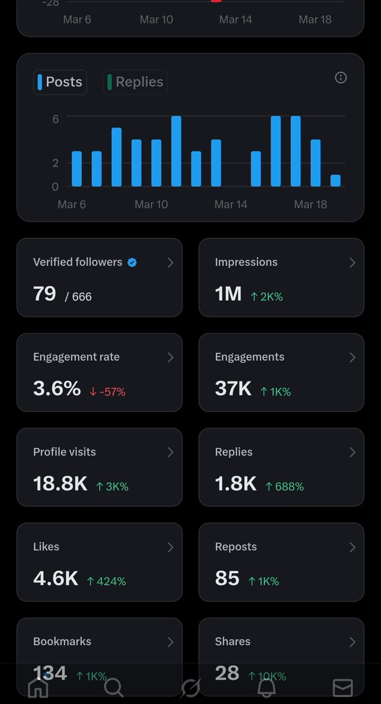
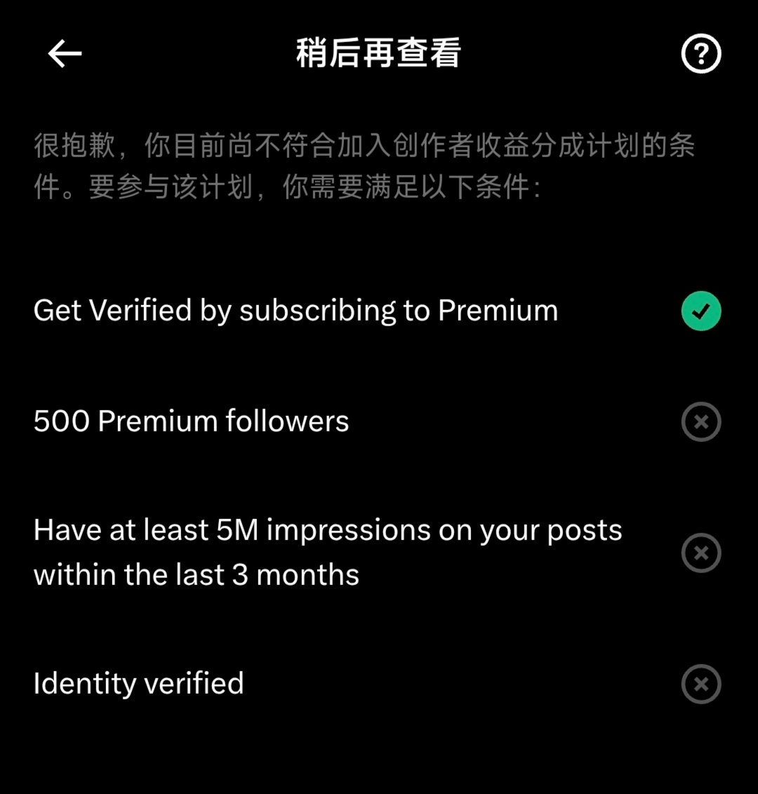

洛书瑶
@luoshuyao
展示一下主播2week随性发帖的流量😎不过一点用都没有因为主播拿不到一分钱
给一些不了解创作者收益的朋友讲一下规则，就是我发的P2
第一就是要有蓝V，这个主播有，不过以后不一定会续费了
第二就是要有500个蓝V粉丝，这就是为什么能看到很多蓝V到处互关，不过主播也不在乎这些，所以那些单纯为了蓝V互关的可不可以不要关注我了
第三就是三个月内曝光量超过五百万，主播觉得自己能做到但是懒得搞
第四就是上传自己的身份信息

